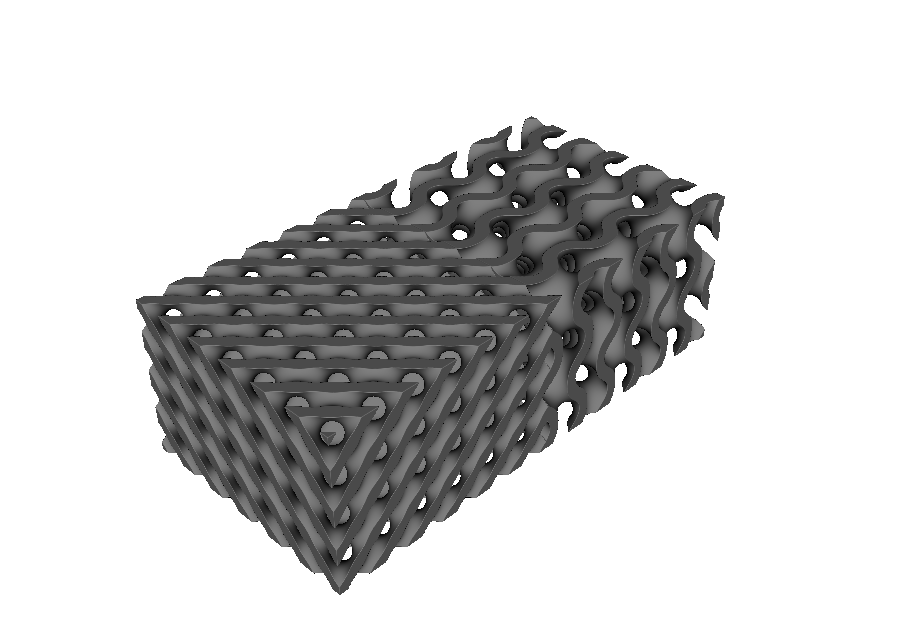
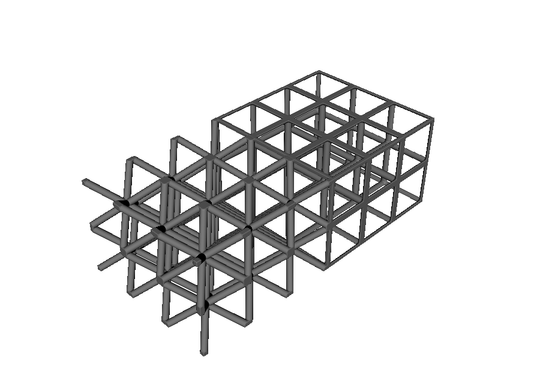
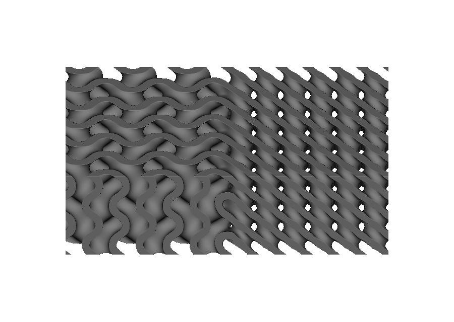
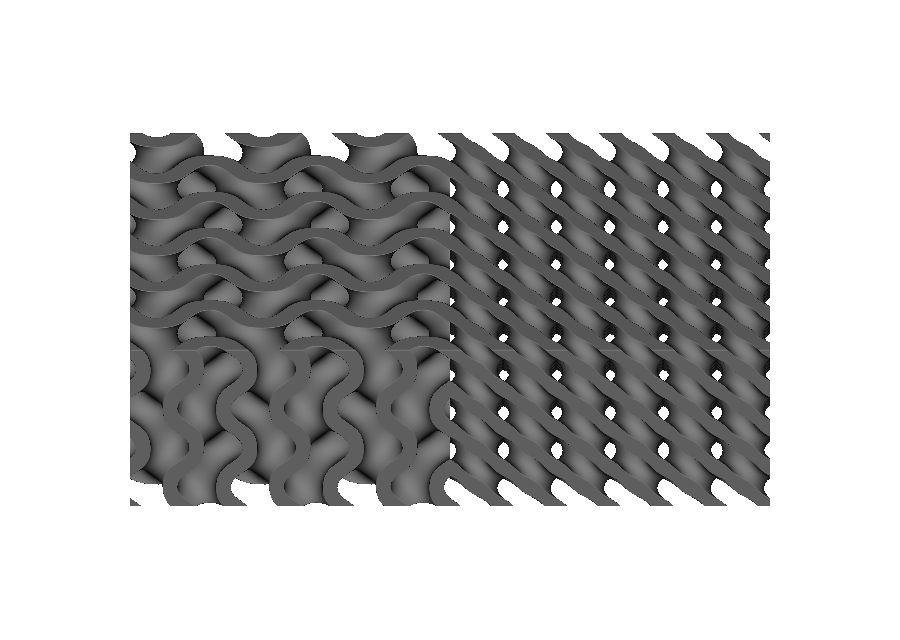
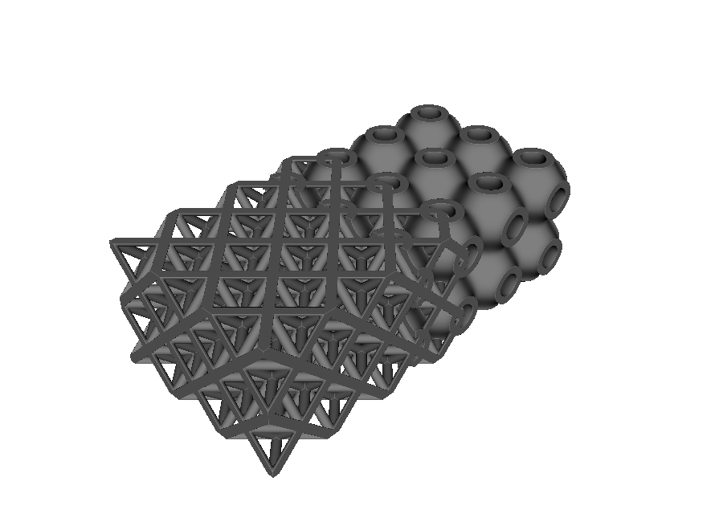

Heterogeneous conformal lattices#
A single CellMap can drive several lattice bodies with different unit-cell topologies. Because every body uses the same logical U/V/W coordinates, TPMS, graph, and plate-like cells retain one coherent conformal layout.
CellMap remains responsible only for logical-to-world mapping. Topology belongs to MappedImplicitLattice, MappedGraphLattice, or MappedFaceLattice; region selection is ordinary OpenVCAD composition.
Build sharp topology regions#
Build each lattice over the full shared map, intersect it with its assigned region, and combine the clipped bodies with an ordinary Union:
import pyvcad as pv
import pyvcad_metamaterials as mm
cell_map = mm.rectangular_cell_map(
(pv.Vec3(-24.0, -12.0, -8.0), pv.Vec3(24.0, 12.0, 8.0)),
cells=(6, 3, 2),
)
gyroid = mm.gyroid(cell_map, wall_thickness=1.2)
schwarz_d = mm.schwarz_d(cell_map, wall_thickness=1.2)
left_region = pv.RectPrism.FromMinAndMax(
pv.Vec3(-30.0, -18.0, -12.0), pv.Vec3(0.0, 18.0, 12.0)
)
right_region = pv.RectPrism.FromMinAndMax(
pv.Vec3(0.0, -18.0, -12.0), pv.Vec3(30.0, 18.0, 12.0)
)
root = pv.Union(
pv.Intersection(gyroid, left_region),
pv.Intersection(schwarz_d, right_region),
)
The region solids meet at one sharp boundary. They can be boxes, imported CAD bodies, or any other OpenVCAD geometry. Each lattice remains authored from the same immutable CellMap; the clipping geometry only selects which topology is retained in each area.
{kind=link}

{kind=link}

Mix compatible topology fields smoothly#
Use mm.mix when the transition should morph between the two scalar fields instead of clipping them. The same region solid can drive a native signed-distance ramp, so changing an existing sharp construction is mechanical:
root = mm.mix(
gyroid,
schwarz_d,
region=left_region,
half_width=4.0,
)
The region surface is the midpoint of the transition. The left field is used unchanged one half_width inside the region, the right field is used unchanged one half_width outside it, and a smoothstep profile interpolates between them. The complete transition band is therefore twice half_width; for an 8 mm cell, half_width=4.0 produces one full cell of transition.
For coordinate-driven transitions, pass a weight field instead:
weight = mm.ramp(-8.0, 8.0, axis="x", smooth=True)
root = mm.mix(gyroid, schwarz_d, weight)
Cell-space ramps are also supported when the map is supplied explicitly:
weight = mm.ramp(2.0, 4.0, axis="u", space="cell")
root = mm.mix(gyroid, schwarz_d, weight, cell_map=cell_map)
mm.idw_weight authors inverse-distance weights from seed points, and mm.mix_many folds several bodies into a binary Mix tree using normalized partial weights. Build every body over the same CellMap; different domains are allowed, but a field jump may occur where only one child’s domain remains defined.
Float, Vec3, Vec4, and material volume-fraction attributes interpolate with the same weight by default. Volume fractions merge over all material IDs and renormalize, producing a continuous digital-alloy transition. Use pv.Mix.AttributePolicy.dominant for discrete labels, or install an ordinary attribute conflict resolver when a weight-independent rule such as average, minimum, or maximum is required.
For TPMS-to-TPMS transitions, ImplicitUnitCell.mixed provides the highest-fidelity path because it mixes the raw periodic fields before sheet or solid shaping, thickness offsets, and map-metric correction. This is the approach used by 01_tpms_to_tpms.py:
cell_weight = mm.ramp(2.5, 3.5, axis="u", space="cell")
mixed_cell = pv.ImplicitUnitCell.mixed(
pv.ImplicitUnitCell.standard("gyroid"),
pv.ImplicitUnitCell.standard("schwarz_d"),
cell_weight,
)
root = mm.tpms(cell_map, mixed_cell, wall_thickness=1.2)
A mixed field is continuous but is not an exact signed-distance field, and continuity does not imply that its solid region remains connected. Components can pinch off or appear when the source features do not correspond. This is especially likely when mixing topology families such as a TPMS sheet and a graph lattice, whose field magnitudes and structural members have different meanings. Treat generic mm.mix results as geometry that requires connectivity inspection rather than as structurally validated transitions.
Connect incompatible topologies with overlap#
For a TPMS-to-graph interface, retain both source structures through an overlap band instead of crossfading their fields. Each structure stays attached to its original side, while their intersections provide explicit connections. The rectangular 03_tpms_to_graph_overlap.py example uses one full 8 mm cell of overlap:
OVERLAP_HALF_WIDTH = 4.0
tpms_region = pv.RectPrism.FromMinAndMax(
pv.Vec3(-30.0, -18.0, -12.0),
pv.Vec3(OVERLAP_HALF_WIDTH, 18.0, 12.0),
)
graph_region = pv.RectPrism.FromMinAndMax(
pv.Vec3(-OVERLAP_HALF_WIDTH, -18.0, -12.0),
pv.Vec3(30.0, 18.0, 12.0),
)
root = pv.Union(
pv.Intersection(schwarz_p, tpms_region),
pv.Intersection(octet, graph_region),
)
Overlap is intentionally heavier than a morph and is not a substitute for mechanical validation. It does, however, avoid the free-floating intermediate components produced by crossfading unrelated fields. Adjust beam radii, wall thickness, and overlap extent so the two retained structures intersect with sufficient printable area.
Drag the divider over this close-up to compare the boundary treatments at the same scale and camera angle:


Sharp CSG clipping Field mixing{kind=link}

{kind=link}
{kind=link}
Choose sharp clipping, field mixing, or overlap#
Sharp clipping preserves exact topology on either side and an exact authored boundary, but it may cap, disconnect, or abruptly terminate members. Align sharp boundaries with shared logical vertices when possible, enlarge deliberate graph nodes, or add explicit connector geometry where load transfer matters.
Smooth mixing guarantees field continuity when both child fields and the weight are continuous, but it does not guarantee geometric or structural connectivity. It works best for compatible fields with corresponding features. Prefer ImplicitUnitCell.mixed for TPMS pairs and inspect every generic node-level mix for islands, thin necks, and enclosed voids.
Overlap preserves both source structures through a finite band and is the safer default for incompatible families such as TPMS-to-graph. The result uses more material and still requires load-path and manufacturability checks, but it can be tested directly for connected components.
All five examples are in examples/metamaterials/heterogeneous_lattices/.